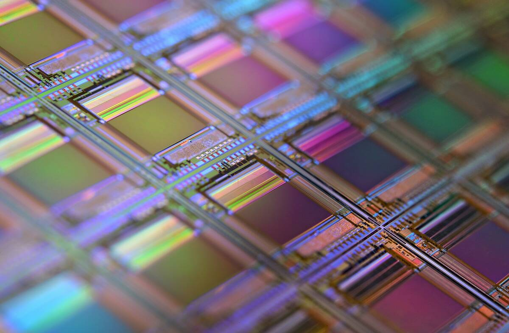

Looking to pick a new CPU?
Picking the right CPU is a crucial step in building your PC, as it determines how well your system handles tasks, from gaming to content creation and everyday use. With options from Intel and AMD, you’ll need to consider factors like core count, clock speed, and compatibility with your motherboard. Whether you need a high-performance processor for demanding workloads or a budget-friendly option for casual use, understanding the differences can help you make the best choice for your needs.
Not sure which CPU to choose?
Our comparison tool makes it easy—stack up Intel and AMD processors side by side and find the perfect fit for your build.